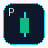

Full tab by default · TradingView URL used for the pair when possible
Symbol override applies only to the next capture. Leave blank to always use the latest OCR + page URL.
Shortcut: Ctrl+Shift+P · Right-click chart image
Captured chart

Full tab by default · TradingView URL used for the pair when possible
Symbol override applies only to the next capture. Leave blank to always use the latest OCR + page URL.
Shortcut: Ctrl+Shift+P · Right-click chart image
Couldn’t read the ticker from the chart. Enter the symbol to continue.